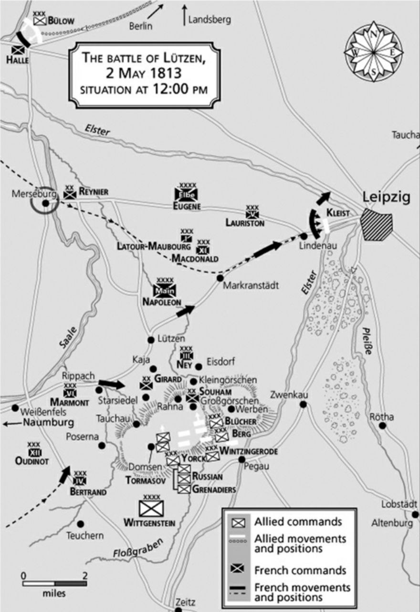
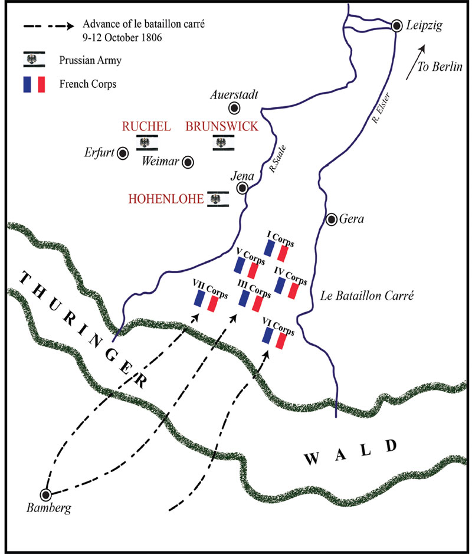
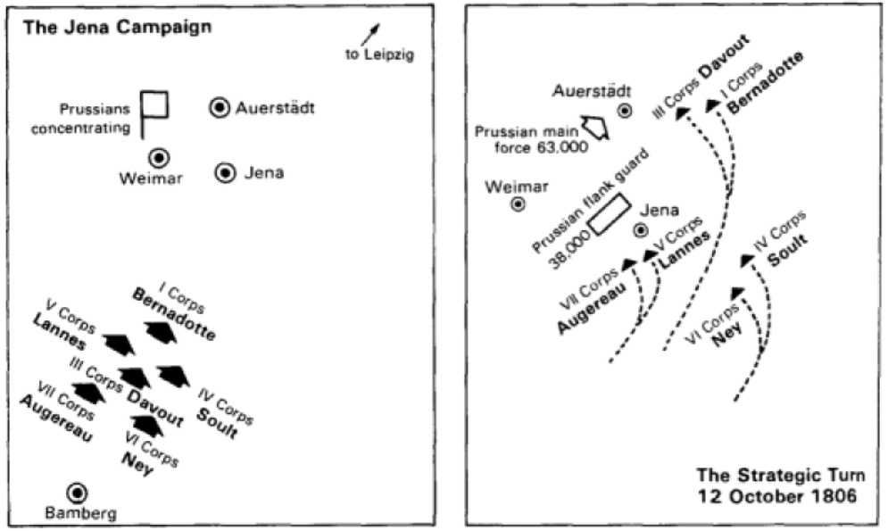
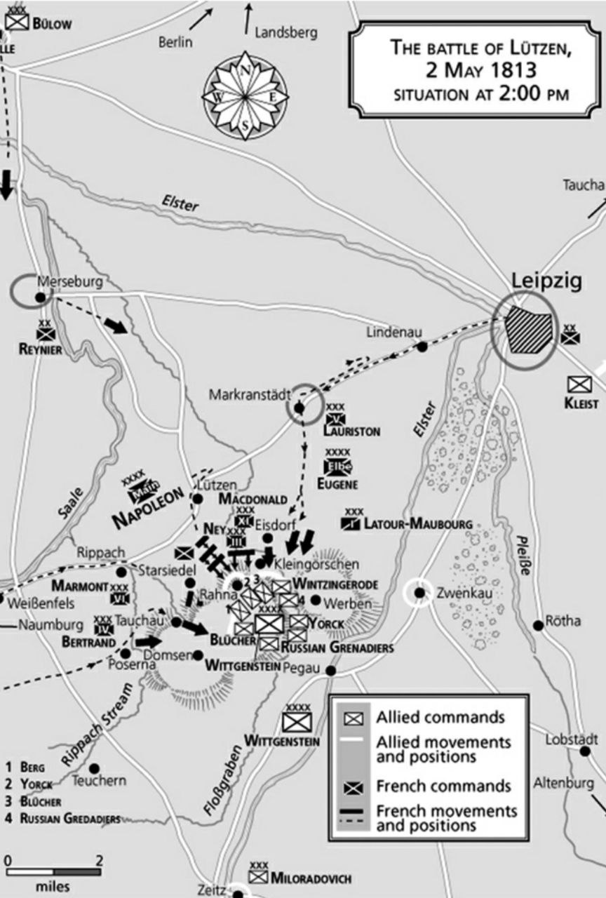

뤼첸 전투 (4) - 바타이옹 카레(bataillon carré)란 무엇인가
게시: 2022-09-26T06:30:48+09:00
비록 카야 마을로 내몰리기는 했지만, 원래 수암 사단의 병력 수가 프로이센군 2개 여단에 비해 크게 열세는 아니었습니다. 그럼에도 불구하고 궁지에 몰린 것은 수암 사단 대부분이 신병으로 이루어져 경험이 부족한데다 프로이센군이 2개 방향에서 공격해왔고, 결정적으로 포병 전력에서 크게 열세였기 때문이었습니다. 얼마 안되는 수암 사단의 포병대는 전투 초기에 프로이센 포병대와의 대결에서 밀려 파괴되었으므로 프로이센 포병들은 프랑스 보병들에게 화력을 집중할 수 있었습니다. 그 결정적으로 우월했던 포병 전력을 4개 마을 안쪽으로 전개시켰다면 수암 사단은 거기서 끝장이 났을 것입니다. 그러나 프로이센군 지휘부는 노장 블뤼허부터가 그저 용감할 뿐 엉성하기 그지 없었습니다. 처음 그로스괴르쉔 마을을 공격할 때 적극 활용했던 포병대를 그냥 그 자리에 내버려 둔 채 잊어버렸던 것입니다. 포병대는 포병대대로 경직되어, 아무 추가 명령이 없자 그냥 그 자리에서 마냥 대기만 하고 있었습니다. 그러는 사이, 프랑스군이 몰려 저항하던 카야 마을 남쪽의 나지막한 능선에 한 문 두 문씩 프랑스군의 대포들이 나타나 프로이센군을 향해 포격을 개시했습니다. 그러던 프랑스 포병대의 숫자가 점점 늘어나 결국 4개 마을 한복판의 공터를 완전히 제압하는 수준이 되어 버렸습니다. 애초에 우세한 화력을 내세워 승기를 잡았던 프로이센군은 어어 하는 사이에 그렇게 화력의 우위를 잃었고, 결국 카야 마을의 프랑스군은 두꺼운 종대를 이루어 공격해 나오기 시작했습니다. 이와 함께 스타지들 마을의 지라드 사단까지 라나 마을을 향해 돌격을 시작했습니다. 그 뿐만 아니었습니다. 어디서 나타났는지 카야 마을에는 프랑스군의 수가 부쩍 늘어나 있었습니다. 프로이센군이 눈치채지 못한 사이, 증원군이 도착한 것이 분명했습니다. 이들은 과연 어디서 나타난 것이었을까요? 그걸 보기 위해서는 먼저 수암 사단이 연합군의 공격을 받고 위기에 처했을 때 나폴레옹이 무엇을 하고 있었는지 보셔야 합니다. 그는 아침 10시에 느긋하게 뤼첸에서 출발하여 라이프치히로 여유만만하게 이동했습니다. 라이프치히와 뤼첸 사이에 있는 마르크란슈테트(Markranstädt)에서 그는 1차 목표를 달성했습니다. 즉 외젠의 엘베 방면군 소속인 로리스통의 제5 군단과 합류한 것입니다. 그는 로리스통의 군단과 함께 서서히 이동하여 11시 반에는 린데나우(Lindenau)까지 이동했는데, 여기서 비로소 수암 사단이 기습 공격을 받았다는 보고를 받았습니다. 그 위치는 자신의 후방, 그러니까 그의 뒤통수였습니다. 허를 찔린 나폴레옹은 당황했을까요?

(5월 2일 낮 12시경 뤼첸 전투 상황도입니다. 특히 라이프치히의 위치와 그 바로 남쪽의 습지처럼 표시된 지대를 눈 여겨 보십시요. 라이프치히 남쪽에는 저수지와 호수들이 꽤 많아서 군대의 이동에는 다소 부적절했는데, 그로 인해 라이프치히를 점령할 경우 연합군의 퇴로를 위협하는 효과를 낼 수 있었습니다.) 나폴레옹은 당황하지 않았습니다. 다만 그의 바로 옆에 서있던 네 원수는 속으로 몹시 당황했습니다. 나폴레옹이 당황하지 않았던 이유는 네가 바로 전날 페가우 및 츠벤카우 일대를 철저히 정찰한 결과, 그 일대에 연합군은 존재하지 않는다고 보고했으므로 수암 사단이 기습 당했다는 소식은 잘못된 보고라고 생각했기 떄문이었습니다. 반대로 네가 당황한 이유는 사실 그 정찰은 보고서처럼 철저한 것은 아니었다는 것을 네 본인이 알고 있었기 때문이었습니다. 네의 군단도 기병 부족으로 인해서 나폴레옹이 요구하는 수준의 정찰을 제대로 수행할 수 없었습니다. 네의 허위 보고 때문에 나폴레옹은 적어도 뤼첸 인근에는 적군이 없다고 확신하고 있었고, 그래서 제3 군단의 지휘관인 네를 그의 군단이 아니라 나폴레옹의 옆자리에 있도록 부른 것이었습니다. 네가 그의 허위 보고에 대해 뭐라고 변명을 했는지에 대해서는 별 기록이 없지만, 나폴레옹은 연합군의 기습 소식이 진짜라고 확인된 뒤에 당황하지 않고 태연하게 네를 돌아보며 이렇게 말했다고 합니다. "우리가 적의 옆구리를 공격했다고 생각했는데, 그 반대였군. 하지만 뭐 해로울 건 없어. 적들은 우리가 어디에서든 그들을 맞이할 준비가 되어 있다는 것을 알게 될 거야." 나폴레옹의 이런 호언장담은 근거없는 자신감이 아니었습니다. 1806년 나폴레옹이 프로이센에게 안겨주었던 예나-아우어슈테트의 악몽이 어떻게 시작되었는지 기억하신다면 나폴레옹의 전술이 기본적으로 발빠른 문어와 비슷하다는 것을 아실 것입니다. 나폴레옹이 거둔 수많은 승리의 기본은 남다른 기동력이었습니다. 그런데, 단순히 기동력만 좋아서는 아무 쓸모가 없었습니다. 적의 위치를 정확히 파악해야 했는데, 그건 항공기가 없던 시절 쉬운 일이 아니었습니다. 그래서 나온 것이 나폴레옹의 문어발 전술이었습니다.

(1806년 예나-아우어슈테트 전투 직전, 프로이센군을 찾아 진격하는 나폴레옹군의 진형입니다. 보시다시피 1813년 전투가 벌어진 곳에서 별로 멀지 않습니다. 그래서 프로이센-러시아 연합군은 뤼첸 전투를 시작하기 전부터 1806년 꼴을 또 당해서는 안 된다는 트라우마를 약간 겪고 있었고, 그것이 결국 다소라도 뤼첸 전투에도 영향을 미쳤습니다.) 그의 군단들은 그 하나하나가 하나의 독립적인 전투 집단이었는데, 그 군단들이 서로 1~2일 이내의 행군 거리에서 넓게 펼쳐져 진격하며 적과의 접촉을 기대하는 것이 나폴레옹의 기본 전술이었습니다. 그렇게 문어발처럼 쫙 펼쳐진 분산된 군단들 중 어느 하나라도 적과 접촉하게 되면 그 소식을 즉각 문어의 두뇌, 즉 나폴레옹에게 보고했고, 그러면 그의 명령에 의해 다른 군단들도 마치 먹이를 노리는 문어가 발을 오므리듯 수축하여 접촉된 적에게 달려드는 것이었습니다. 8개의 발을 가진 문어는 전후좌우가 따로 없지요. 마찬가지로 나폴레옹의 펼쳐져 이동하는 군단들에게도 전후좌우가 따로 없었습니다. 이것을 저는 문어발 전술이라고 부르지만 군사 전문가들은 bataillon carré (바타이옹 까레, 사각 대대) 전술이라고 부릅니다. 사각 대대라는 것은 그냥 보병 방진(carré d'infanterie)을 뜻하는 것은 아니지만, 보병 방진과 많은 닮은 점이 있습니다. 바로 전후좌우가 없다는 점이지요.

(1806년 예나 전투에서 호헨로헤의 부대와 접촉하자마자 벼락같이 선회하는 나폴레옹 군단들의 모습을 보십시요. 저건 정말 단련된 정예 부대만이 해낼 수 있는 것이었습니다.) 당시 나폴레옹군의 선봉은 외젠 휘하 막도날의 제11 군단이 맡아 라이프치히를 향해 접근하고 있었습니다. 습격당한 네의 제3 군단은 나폴레옹군의 우익이었고 그 뒤를 마르몽의 제6 군단이 바싹 따르고 있었으며, 좌익은 역시 외젠 휘하 로리스통의 제5 군단이 담당하고 있었습니다. 그리고 후위는 베르트랑의 제4 군단이 맡고 있었습니다. 그리고 중앙에는 언제나처럼 나폴레옹 본인과 그의 근위대가 버티고 있었습니다. 비트겐슈타인은 나폴레옹의 우익 뒤통수를 때렸다고 생각했지만 사실은 우익의 거의 한복판을 잘못 때린 셈이었습니다. 그러나 그게 우익의 앞부분이건 뒷부분이건 별 상관 없었습니다. 나폴레옹의 바타이옹 까레는 문어처럼 순식간에 방향 전환이 가능했습니다. 네와 마르몽이 선봉을, 선두의 막도날이 좌익을, 그리고 베르트랑이 우익을, 로리스통이 후위의 역할을 어렵지 않게 해낼 수 있었습니다. 실제로 나폴레옹은 네에게 즉각 4개 마을 전투 현장으로 달려가 무슨 대가를 치르더라도 4개 마을을 사수하라고 지시한 뒤, 마르몽에게는 그 바로 서쪽에 접한 스타지들 마을로 달려오게 했습니다. 위기에 처한 수암 사단을 구해낸 것은 나머지 3개 사단을 이끌고 4개 마을에 나타난 네였습니다. 그리고 베르트랑을 스타지들 마을 바로 남쪽인 죄헤스텐(Söhesten)으로 이동시켜 적의 왼쪽 측면을 위협하도록 했고, 막도날은 4개 마을 동쪽의 아이스도르프(Eisdorf)로 달려가 적의 우측 측면에 압력을 가하게 했습니다. 그리고 로리스통의 제5 군단 중 1개 사단은 그대로 가던 길을 계속 진격하여 라이프치히를 점령하도록 하고 다른 2개 사단은 카야 마을 쪽으로 이동시켜 예비대로 대기하도록 했습니다. 나중에 드러나지만, 로리스통 휘하의 1개 사단을 그대로 라이프치히로 진군시킨 것이 신의 한수로 드러납니다.

(연합군으로서는 기가 막힐 노릇이었을 것입니다. 분명히 길게 늘어진 적군을 기습 했다고 생각했는데, 불과 몇 시간 만에 오히려 자신들이 좁은 공간에 포위된 모양새가 되었으니까요.)
Source : The Life of Napoleon Bonaparte, by William Milligan Sloane Napoleon and the Struggle for Germany, by Leggiere, Michael V
https://www.napoleon-series.org/military-info/organization/c_armycorps.html
https://www.reddit.com/r/AskHistorians/comments/7lalnf/what_specific_battle_tactics_did_napoleon_employ/ https://forceindia.net/feature-report/cold-facts/